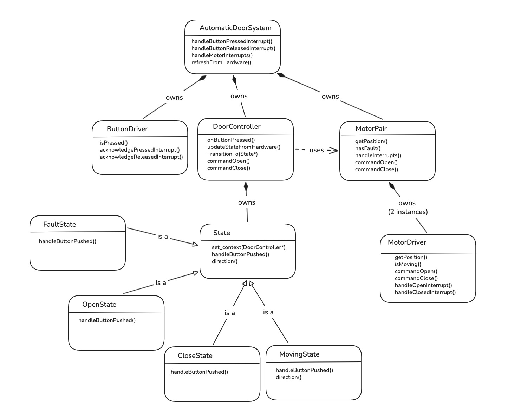
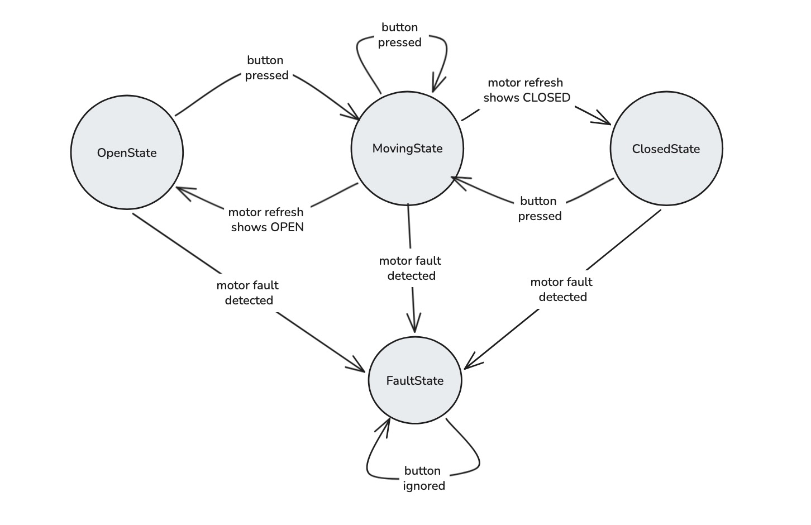
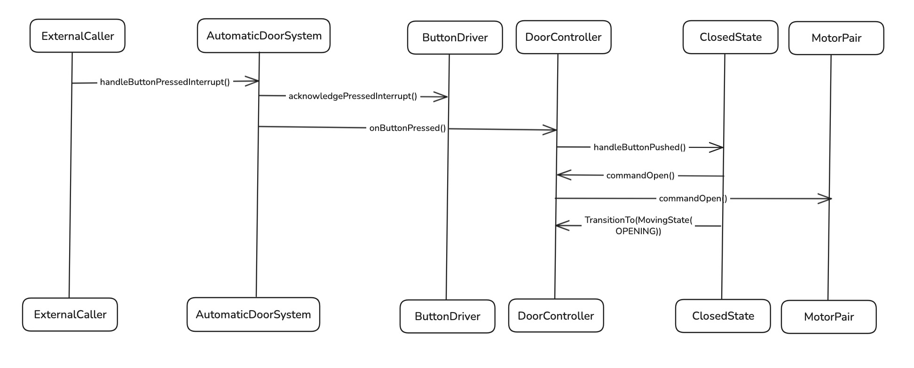

|
Automatic Door Opener
Interview assessment implementation for a paired-motor automatic door controller.
|
The following diagrams are the final architecture views for this submission. They are intentionally focused on the main design decisions and runtime flow rather than every implementation detail.

Notes:
AutomaticDoorSystem is the top-level coordinator. It owns the button driver, door controller, and motor pair, and acts as the application boundary between hardware events and door-control behavior.ButtonDriver is intentionally narrow. Its responsibility is limited to reading button state and acknowledging button interrupts; it does not contain door-control policy.DoorController owns the active State object and delegates button behavior to the current concrete state. This is the context in the State pattern.MotorPair provides a single actuator-facing interface over the two physical motor drivers. The controller commands the pair rather than managing each motor directly.OpenState, ClosedState, MovingState, and FaultState are concrete states derived from the abstract State base class.MovingState carries direction internally so the system can preserve whether the door is opening or closing while in motion.FaultState models a safe terminal condition for motor disagreement or mismatched motion. Recovery behavior is intentionally left out of scope for this implementation.
Notes:
OpenState commands the door to close and transitions the controller into MovingState.ClosedState commands the door to open and transitions the controller into MovingState.MovingState to OpenState.MovingState to ClosedState.FaultState. In the current implementation, fault conditions include contradictory end states or mismatched motor motion.FaultState ignores subsequent button presses. This keeps the current design conservative until an explicit recovery requirement is defined.MovingState.
Notes:
AutomaticDoorSystem::handleButtonPressedInterrupt().AutomaticDoorSystem first asks ButtonDriver to acknowledge the pressed interrupt, then separately notifies DoorController that a button press has occurred.ButtonDriver does not call into DoorController; this separation is intentional. The driver handles button hardware, while the controller handles door behavior.DoorController delegates the event to the active concrete state. In this sequence, the active state is ClosedState.ClosedState responds by asking the controller to commandOpen(), which causes DoorController to forward the request to MotorPair.MotorPair then issues the open command to both underlying motor drivers.ClosedState transitions the controller to MovingState(OPENING).These diagrams emphasize ownership boundaries, state transitions, and the main button-driven control flow. Lower-level register reads, interrupt bit clearing, and individual motor driver calls are intentionally summarized unless they are needed to explain a design decision.